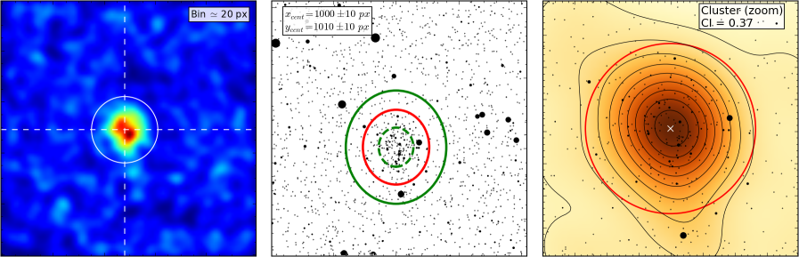

WARNING: Although the code is fully functional it is still under heavy development. If you want to use it, please do so with caution or contact me to discuss the applicability to your case.

About
The Automated Stellar Cluster Analysis (ASteCA) package is designed to fully automatize the usual tests applied on star clusters in order to determine their characteristics: center, radius, stars' membership probabilities and associated intrinsic/extrinsic parameters: metallicity, age, reddening, distance, total mass, binarity fraction, etc.
The full documentation for the code is under construction. Until the release of v1.0.0, this documentation will be in various stages of incompleteness.
If you have a ResearchGate account, you can follow the code's project to receive updates on its development and related articles.
Article
The accompanying article describing the code in detail can be freely accessed via A&A. If you use ASteCA, you may reference this article with the following BibTeX entry:
@article{Perren_2015,
author = {{Perren, G. I.} and {V\'azquez, R. A.} and {Piatti, A. E.}},
title = {ASteCA: Automated Stellar Cluster Analysis},
DOI= "10.1051/0004-6361/201424946",
url= "http://dx.doi.org/10.1051/0004-6361/201424946",
journal = {A\&A},
year = 2015,
volume = 576,
pages = "A6",
month = "04",
}
Feedback
Bugs, issues and feature requests can be reported at the code's issue tracker. The author can be contacted by email for any questions and/or suggestions.
License
The ASteCA code is developed entirely in Python and distributed under a GPLv3 open source license.